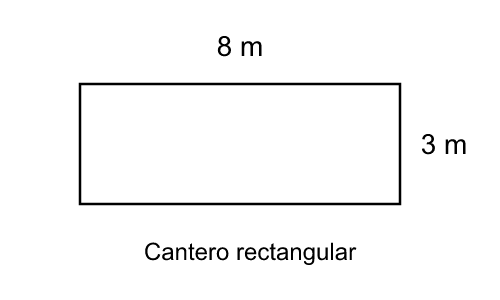

DS4B-EJEMPLO-001 - versión 1
Un cantero rectangular mide 8 metros de largo y 3 metros de ancho, como muestra la figura. ¿Cuál es el área del cantero?

Dibujo ampliado para inspección. No es prueba de tamaño real de pantalla o impresión.
Abrir PNG · Abrir SVG- 11 m²
- 22 m²
- 24 m²
- 48 m²
Registrar resultado propio y opciones válidas antes de abrir el sobre separado.
SHA-256 del candidato: 2001dcd64a6edaeed132494d9f084fa1c14e2ca4e7c5bf035bdd9c5b35e30b0e